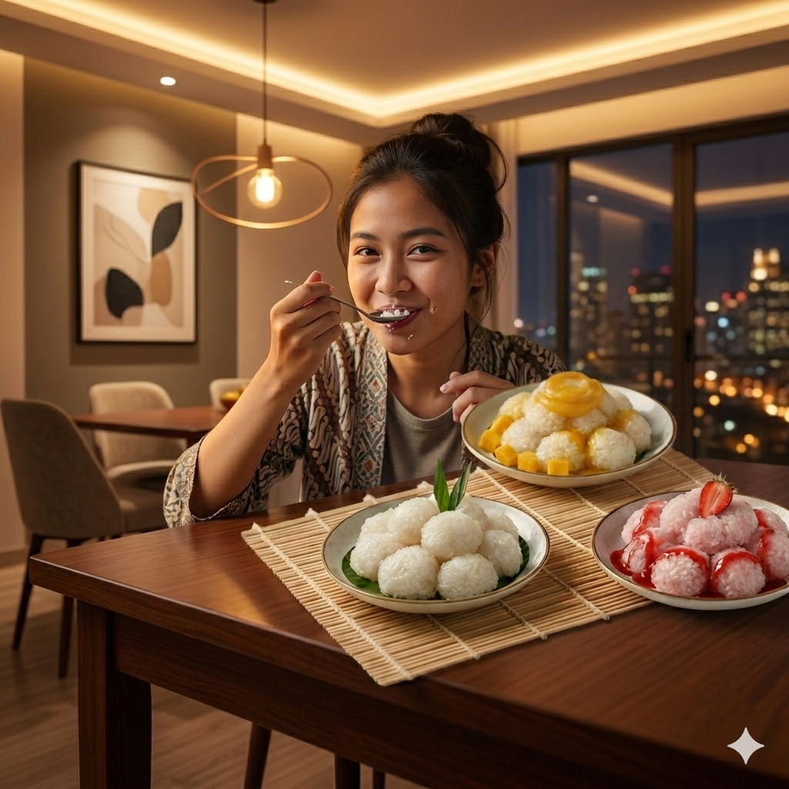

Tape ketan putih merupakan produk olahan pangan tradisional yang dibuat melalui proses fermentasi pada beras ketan dengan bantuan ragi. Tape ketan yang dibuat dalam proyek ini dikembangkan dengan penambahan sari buah alami, yaitu mangga dan stroberi. Tape ketan mangga merupakan tape ketan yang dicampur dengan sari buah mangga sehingga menghasilkan cita rasa manis yang lebih kuat serta aroma buah yang khas. Sementara itu, tape ketan stroberi merupakan tape ketan yang ditambahkan sari buah stroberi sehingga memberikan rasa manis-asam yang segar serta warna yang lebih menarik.
Back to MenuSiapkan 20 buah stroberi, cuci hingga bersih lalu pisahkan tangkai dan potong kecil-kecil. Masukkan potongan stroberi ke dalam blender dan haluskan hingga menjadi cair. Setelah itu, saring menggunakan penyaring halus untuk memisahkan sari buah dari ampasnya. Sari buah stroberi yang telah tersaring kemudian dipindahkan ke dalam mangkuk dan siap digunakan.
Siapkan 1 buah mangga, cuci hingga bersih lalu kupas kulitnya. Potong daging mangga menjadi bagian kecil dan pisahkan dari bijinya. Masukkan potongan mangga ke dalam blender dan haluskan hingga cair. Setelah itu, saring menggunakan penyaring halus untuk memisahkan sari buah dari ampasnya. Sari buah mangga yang telah tersaring kemudian dipindahkan ke dalam mangkuk dan siap digunakan.
Cuci beras ketan putih hingga bersih lalu rendam selama 1 jam. Setelah itu tiriskan dan kukus selama 30 menit hingga setengah matang. Angkat ketan, tambahkan 100 ml air, aduk hingga merata dan diamkan sampai air terserap, kemudian kukus kembali selama 30 menit. Setelah matang, bagi ketan menjadi tiga bagian masing-masing 500 gram. Satu bagian digunakan sebagai tape ketan putih, sedangkan dua bagian lainnya dicampur dengan sari buah mangga dan stroberi hingga cairan terserap. Kukus kembali masing-masing ketan selama 30 menit, lalu dinginkan. Setelah dingin, taburkan ragi yang telah dihaluskan secara merata pada setiap bagian ketan (½ butir ragi). Selanjutnya simpan ketan dalam wadah yang dialasi daun pisang, tutup, dan fermentasikan selama 3 hari di tempat yang tidak terkena cahaya langsung. Selama proses penelitian, tape ketan diamati setiap hari untuk mencatat tekstur, kadar gula, dan rasa. Pada hari ke-4, tape ketan putih, tape ketan mangga, dan tape ketan stroberi siap dikonsumsi.
Back to MenuLandryna Ameera Qudsia
9A/19